Sepsis is a dysregulated host response to infection that causes life-threatening organ dysfunction [1]. It is common and deadly: a global burden study estimated 48.9 million cases and 11 million sepsis-related deaths in 2017 [2], and observational work has linked each hour of delay in effective antimicrobial therapy for septic shock to lower survival [3]. These facts motivate early-warning systems that predict sepsis from routinely collected ICU data, and the PhysioNet/Computing in Cardiology Challenge 2019 provided a public benchmark for exactly that task [4].
Accuracy on clean validation data is necessary but not sufficient. Deployed sepsis models have performed worse than expected outside the setting in which they were developed [5], and clinical AI in general is vulnerable to changes in the data it receives [6]. A less discussed failure mode is input corruption at the bedside: unit mix-ups, device artefacts, interface feeds that stop updating, and manual edits. A tree ensemble given a body temperature of 98.6 in a Celsius field does not know that the number is impossible; it simply produces a probability, often a confident one.
SepsisShield addresses this by asking a second question next to the usual one. The model asks "what is this patient's sepsis risk?"; an independent integrity layer asks "can the clinical data behind this prediction be trusted?". The answer to the second question decides what the clinician sees. Put briefly: model uncertainty asks whether the models disagree; SepsisShield asks whether the data themselves deserve to be believed. The contributions of this work are:
Three properties of ICU data make input trust a practical concern rather than a theoretical one. First, data arrive from many devices and interfaces (bedside monitors, point-of-care analysers, central laboratories, manual charting), each with its own units and failure modes. Second, early-warning features are dominated by trends and recent extremes, so a single corrupted value can shift rolling features for hours after it occurs. Third, the most dangerous corrupted prediction is not a noisy one but a plausible-looking one: a false all-clear for a deteriorating patient, or a false alarm that teaches staff to ignore alerts.
The original PhysioNet records already contain such values. Applying SepsisShield's plausibility limits to all 1,552,210 patient-hours flags 2,548 hours from 1,451 patients with values that cannot be physiologically real (for example FiO₂ of 4000 or a respiratory rate of 1) and 1,262 hours with internally inconsistent blood pressure. These are signs that the problem exists in research-grade data; they are not a measured rate of clinical incidents.
The system therefore does not try to correct data or to recommend treatment. Its job is narrower: make the reliability of each prediction visible, and avoid presenting an untrustworthy prediction as actionable.
Sepsis prediction. The 2019 PhysioNet challenge [4] introduced a time-dependent utility score that rewards alerts 6–12 hours before onset and penalises late or false alerts; gradient-boosted trees on engineered features were among the strongest approaches. External evaluations of deployed proprietary models have reported substantially lower discrimination than developers reported [5], and implementation studies stress workflow integration as much as accuracy [7].
Calibration and uncertainty. Isotonic regression is a standard non-parametric calibration method [8]; calibration error is commonly summarised by expected calibration error and Brier score [9]. Ensembles provide a simple predictive-uncertainty signal through member disagreement [10].
Selective prediction. Selective classification lets a model abstain on inputs where it is unreliable and studies the trade-off between coverage and risk [11, 12]. Most work abstains on model uncertainty; SepsisShield abstains on input evidence, and we show empirically (Section 11) why the two are not interchangeable for data faults.
Distribution shift and data validation. Dataset-shift detection has been studied extensively [13], and clinicians have been urged to treat dataset shift as a patient-safety issue [6]. Production ML systems routinely validate incoming data against schemas and expected ranges [14]. Robustness benchmarks built from controlled corruptions are well established in computer vision [15]; our corruption benchmark applies the same idea to ICU time series, with clinically motivated fault types.
Explainability. SHAP [16] and its exact tree variant TreeSHAP [17] are widely used to explain tree-ensemble risk scores. We use TreeSHAP for risk drivers but treat it as one part of a broader explanation that also names the integrity check behind each trust decision.
We use the public PhysioNet/CinC 2019 Sepsis Challenge training data [4, 18] (CC BY 4.0): 40,336 ICU stays from two US hospital systems (Hospital A, 20,336 patients; Hospital B, 20,000 patients), 1,552,210 patient-hours and 2,932 patients who met the Sepsis-3 based challenge definition. Each hour contains up to 8 vital signs, 26 laboratory values and 6 demographic or administrative variables; most laboratory values are missing at most hours, which is normal for ICU data. The challenge labels every hour from 6 hours before the clinical onset time onward as positive; we follow the challenge convention and recover onset as the first positive hour plus 6 hours.
Splits. Patients (never hours) are split 70/10/20 into training, validation and test sets, stratified by hospital and sepsis status (28,234 / 4,034 / 8,068 patients). Every threshold, calibrator, integrity rule and shift reference was fitted on training or validation patients only. For external validation we additionally train on one hospital and test on the other. Test-set prevalence is 1.80% of hours (586 septic patients).
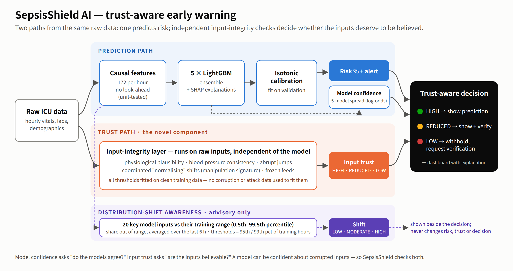
The system has two paths and a decision layer:
The key design rule, implemented in src/integrity.py::trust_level, is asymmetric: LOW trust, and therefore withholding,
is triggered only by evidence from the clinical inputs (physiologically implausible values, impossible blood-pressure combinations,
or a coordinated "normalising" shift across vitals). Ensemble disagreement can lower trust to REDUCED but can never cause a withhold and
can never raise trust. This keeps the strongest action tied to evidence a clinician can check.
Features. All 172 features are causal: the value at hour t uses only observations at hours ≤ t, so the model could run in real time. Feature groups are last observed values, hours since each variable was last measured (informative missingness), rolling statistics and deltas over 6 and 12 hours, and clinical composites (SIRS score, partial qSOFA, shock index and similar). Missing values are left as missing; LightGBM handles them natively, and the missingness pattern itself is predictive (Table 6).
Model. Five LightGBM [19] models with different random seeds (learning rate 0.02, 31 leaves, minimum 500 samples per leaf, feature fraction 0.5, bagging 0.8, L2 1.0; early stopping on validation AUROC). Hyper-parameters were chosen on the validation set only. The ensemble probability is the mean of the five members.
Model families compared. To check that the choice of model is reasonable, we trained random forest, XGBoost [20] and CatBoost [21] on the same split with the same protocol (early stopping, isotonic calibration and utility-optimal threshold all chosen on validation patients; one evaluation on test). These are comparison models only; the deployed model was not changed or retrained.
| Model | AUROC | AUPRC | Brier | ECE | Utility | Sens. | Spec. |
|---|---|---|---|---|---|---|---|
| SIRS rule (≥2 of 4) | 0.635 | 0.029 | – | – | 0.036 | 82.1% | 26.5% |
| qSOFA-partial rule (≥1 of 2) | 0.576 | 0.022 | – | – | -0.054 | 86.9% | 9.7% |
| Logistic regression + isotonic | 0.751 | 0.072 | – | 0.0018 | 0.284 | 76.8% | 57.4% |
| Random forest + isotonic | 0.839 | 0.108 | 0.0167 | 0.0036 | 0.406 | 80.2% | 68.8% |
| CatBoost + isotonic | 0.839 | 0.110 | 0.0167 | 0.0034 | 0.409 | 74.7% | 77.4% |
| XGBoost + isotonic | 0.853 | 0.128 | 0.0165 | 0.0021 | 0.433 | 83.4% | 68.0% |
| Single LightGBM (uncalibrated) | 0.852 | 0.131 | – | 0.0031 | 0.428 | 83.1% | 70.2% |
| SepsisShield: 5× LightGBM + isotonic | 0.852 | 0.122 | 0.0166 | 0.0028 | 0.425 | 79.4% | 73.8% |
Finding. Gradient-boosted trees dominate: XGBoost (AUROC 0.853, utility 0.433) lies inside the 95% confidence interval of the SepsisShield ensemble (AUROC 0.852, 95% CI 0.840–0.865; utility 0.425, CI 0.394–0.455). Random forest and CatBoost reach 0.839 and 0.839; logistic regression 0.751; SIRS and partial qSOFA rules 0.635 and 0.576. We kept the LightGBM ensemble because it was the model already shipped and evaluated end to end, and because its five members provide the disagreement signal used by the trust layer. The contribution of SepsisShield is not a better risk model; it is what surrounds the risk model.
Clinical operating point. At the validation-chosen threshold the system alerts 79.4% (75.9–82.5%) of septic patients within the useful window, alerts 53.9% at least 6 hours before onset (median lead time 12 h), and leaves 73.8% of non-septic patients without any alert. The false-alert burden is 188 alert-hours per 100 non-septic patient-days, which is high and is a known weakness of hourly sepsis alerting.
Operating-point trade-off. The threshold is a deployment choice, not a property of the model. Figure 2 and Table 1b show the trade-off on the held-out test set. The shipped 3% threshold maximizes utility on validation patients (0.481); 2% would alert more septic patients (87.9%) at 48 new alert episodes per 100 non-septic patient-days instead of 32.5; 5% would cut that to 18 but alert only 67.2% of septic patients. Counting alert episodes (an alert that starts after a non-alert hour) is closer to what a clinician experiences than counting alert-hours. A site would choose its own point with local data; the trust layer works the same at any threshold.
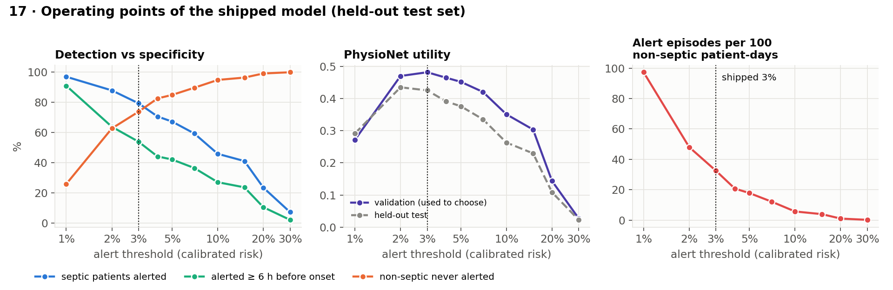
| Alert threshold | Septic alerted | ≥ 6 h early | Non-septic never alerted | Utility (val / test) | False-alert hours / 100 non-septic pt-days | Alert episodes / 100 non-septic pt-days |
|---|---|---|---|---|---|---|
| 1% | 96.9% | 91.0% | 25.9% | 0.272 / 0.291 | 800 | 97.3 |
| 2% | 87.9% | 63.8% | 62.7% | 0.470 / 0.435 | 311 | 48.0 |
| 3% (shipped) | 79.4% | 53.9% | 73.8% | 0.481 / 0.425 | 188 | 32.5 |
| 5% | 67.2% | 42.2% | 84.9% | 0.452 / 0.376 | 92 | 17.8 |
| 7% | 59.4% | 36.5% | 89.6% | 0.420 / 0.335 | 61 | 12.2 |
| 10% | 45.9% | 27.1% | 94.8% | 0.351 / 0.263 | 28 | 5.7 |
| 20% | 23.5% | 10.6% | 99.1% | 0.144 / 0.108 | 5 | 1.0 |
The integrity layer runs five checks on raw hourly measurements, each fitted on training patients only:
Because corrupted values propagate into rolling features, any hard flag keeps the patient at REDUCED trust for 6 hours afterwards. Ensemble disagreement above the 99th percentile of validation hours (log-odds spread > 0.293) also lowers trust to REDUCED.
Why there is no 0–100 "trust score". A numeric trust score would invite readers to treat 43/100 as meaningfully different from 47/100. We have no outcome data that could calibrate such a scale, so we report three evidence-based levels and always name the check that fired. Why missing values do not lower trust. Most laboratory values are missing at most hours by design, and missingness is itself predictive; flagging it would withhold most predictions. Section 10 measures what this choice costs.
The ensemble's mean probability is passed through isotonic regression fitted on validation patients. Calibration matters because the dashboard shows a risk percentage, and because the alert threshold is applied to the calibrated score.
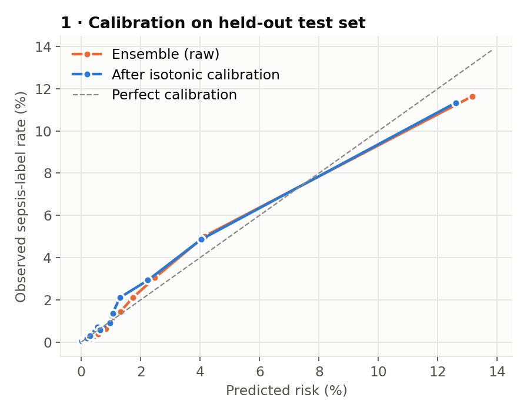
Result. The raw ensemble was already well calibrated (ECE 0.0032, Brier 0.0166). Isotonic calibration lowered ECE modestly to 0.0028, with an essentially unchanged Brier score (0.0166) and AUROC. We report this honestly: on this dataset calibration is a small refinement, not a major contributor.
Calibration does not survive a change of hospital or prevalence unchanged. In the cross-hospital experiments (Section 14) the transferred model's ECE rose to 0.0054 (A→B) and 0.0083 (B→A); refitting the calibrator and threshold on 20% of local patients reduced it to 0.0011 and 0.0020. Under a simulated three-fold prevalence increase the mean predicted risk (4.0%) fell well below the observed rate (8.6%).
Method. A transparent, model-free indicator. We take the 20 model features with the highest mean LightGBM gain (excluding ICU length of stay, a time index), record each feature's 0.5th–99.5th percentile range on training patients, compute at each hour the share of observed features outside their range, and average it over the previous 6 hours. Thresholds are the 95th and 99th percentiles of that score on training patient-hours: LOW ≤ 0.0588 < MODERATE ≤ 0.1273 < HIGH.
Behaviour on real data. On the test set 3.6% of hours are MODERATE and 1.0% HIGH, close to the 4% and 1% expected by construction. When the reference is fitted on one hospital and applied to the other, MODERATE + HIGH hours rise from 4.3% to 7.4% (A→B) and from 4.7% to 8.5% (B→A). AUROC on HIGH-shift hours was 0.749 (95% CI 0.621–0.862) versus 0.852 on LOW-shift hours: lower, but with a wide interval.
Simulated cohort shifts. We applied five whole-cohort perturbations to the stress-test cohort (Section 10) and compared two real age subgroups. The indicator reacts clearly to shifted vital signs (2.3× the reference flag rate) and to measurement noise (2.2×), but barely to missing laboratory values, to an older cohort whose ages remain inside the training range, or to a change in prevalence (which does not change any input). The prevalence change is nevertheless harmful: hourly AUROC fell to 0.733 because the case mix of negative hours changed, and calibration-in-the-large broke (above). A range-based indicator cannot see such shifts.
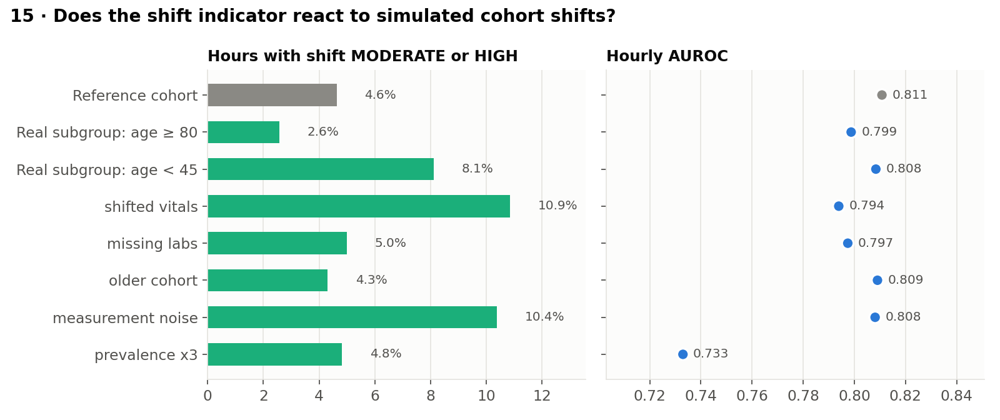
| Simulated cohort | Shift MODERATE + HIGH hours | vs reference | AUROC | ECE |
|---|---|---|---|---|
| Reference cohort | 4.6% | 1.0× | 0.811 | 0.0190 |
| Real subgroup: age ≥ 80 | 2.6% | 0.6× | 0.799 | 0.0266 |
| Real subgroup: age < 45 | 8.1% | 1.8× | 0.808 | 0.0240 |
| Shifted vitals (HR +20, Resp +6, Temp +1 °C) | 10.9% | 2.3× | 0.794 | 0.0109 |
| Missing labs (60% of lab values removed) | 5.0% | 1.1× | 0.797 | 0.0231 |
| Older cohort (Age +25 y, capped at 100) | 4.3% | 0.9× | 0.809 | 0.0177 |
| Measurement noise (0.3 SD) | 10.4% | 2.2× | 0.808 | 0.0166 |
| Prevalence ×3 (non-septic patients subsampled) | 4.8% | 1.0× | 0.733 | 0.0463 |
Interpretation. Distribution-shift awareness indicates that an input pattern differs from the training distribution; it does not establish that a prediction is incorrect or clinically unsafe. Section 13 shows that turning it into a flag would almost double the share of clean hours that are flagged for a small gain, which is why it remains advisory.
Cohort and protocol. All corruption experiments use the same stress-test cohort: every septic test patient (586) plus 2,500 randomly chosen non-septic test patients (124,773 hours). Faults are injected into the raw data and the full pipeline is re-run: features, models, calibration, integrity checks, shift indicator. No model is retrained. For septic patients the corruption window is placed in the clinically decisive period (12 h before to 3 h after onset), the worst case.
Safety metric. A dangerous failure is a patient-hour inside the corruption window where the fault flipped the alert decision and the new decision is wrong: a timely alert suppressed in a septic patient's useful window, or a new alert outside any useful window. Dangerous failure coverage is the share of these that are withheld or warned rather than shown silently.
| Simulated fault (10-hour window) | Dangerous failures | Withheld | Warned | Silent | Flagged or withheld |
|---|---|---|---|---|---|
| Thermometer reports °F into a °C field | 4,329 | 1,609 | 2,708 | 12 | 99.7% |
| Lab unit mix-up (SI ↔ conventional) | 697 | 200 | 471 | 26 | 96.3% |
| Monitor artefact (HR 190–240, SBP 25–45) | 1,255 | 951 | 304 | 0 | 100.0% |
| Frozen monitor feed | 509 | 6 | 232 | 271 | 46.8% |
| All four accidental faults | 6,790 | 2,766 | 3,715 | 309 | 95.4% |
| Deliberate edit: vitals overwritten to look normal | 786 | 66 | 268 | 452 | 42.5% |
| Deliberate edit kept physiologically plausible (sensitivity check) | 876 | 33 | 199 | 644 | 26.5% |
| Benign control: ordinary measurement noise | 87 | 2 | 9 | 76 | 12.6% |
Unit errors and monitor artefacts are almost always caught because they produce impossible values. Frozen feeds are the weakest accidental fault (46.8%): a copied-forward value is plausible by definition, and the flatline rule needs 8 identical hours. Deliberate edits are the principal limitation. The simulated edit subtracts fixed amounts, which sometimes pushes values outside physiology and helps detection; when the edited values are kept inside normal adult ranges, coverage falls from 42.5% to 26.5% (232 / 876). The benign noise control is rarely flagged, as intended.
Injecting HR = 900, temperature = 70 °C or SBP = −20 into 1% of hours (1,232 hours) produced LOW trust and a withheld prediction at 1,232 of 1,232 injected hours.
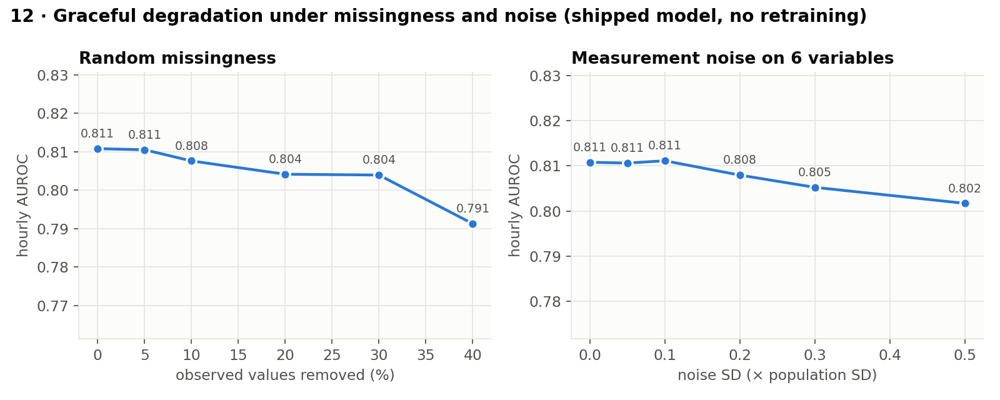
| Perturbation | AUROC | Utility | Sens. | Trust LOW / REDUCED hours | Shift MOD+HIGH hours | Dangerous decision flips (flagged) |
|---|---|---|---|---|---|---|
| None (stress-test cohort) | 0.811 | 0.506 | 79.4% | 0.48% / 5.1% | 4.6% | – |
| Missingness 5% | 0.811 | 0.503 | 79.4% | 0.55% / 5.4% | 4.7% | 249 (12.0%) |
| Missingness 10% | 0.808 | 0.499 | 78.0% | 0.49% / 5.1% | 4.7% | 580 (7.8%) |
| Missingness 20% | 0.804 | 0.487 | 77.3% | 0.40% / 4.6% | 4.8% | 1,192 (7.4%) |
| Missingness 30% | 0.804 | 0.478 | 75.8% | 0.30% / 4.2% | 4.8% | 1,625 (6.3%) |
| Missingness 40% | 0.791 | 0.458 | 73.7% | 0.26% / 4.2% | 4.9% | 2,083 (6.3%) |
| Noise 0.05 SD | 0.811 | 0.510 | 79.7% | 0.50% / 5.2% | 5.1% | 499 (7.8%) |
| Noise 0.1 SD | 0.811 | 0.513 | 79.9% | 0.52% / 5.3% | 5.6% | 866 (9.5%) |
| Noise 0.2 SD | 0.808 | 0.520 | 81.7% | 0.58% / 5.9% | 8.2% | 1,932 (10.9%) |
| Noise 0.3 SD | 0.805 | 0.524 | 82.8% | 0.75% / 7.0% | 10.9% | 2,924 (10.7%) |
| Noise 0.5 SD | 0.802 | 0.538 | 86.2% | 1.41% / 10.6% | 15.2% | 5,390 (17.5%) |
Findings. Discrimination degrades gradually: AUROC falls from 0.811 to 0.791 with 40% of observed values deleted and to 0.802 with noise at half a population standard deviation. Patient-level sensitivity falls from 79.4% to 73.7% under 40% missingness. The trust layer deliberately does not treat missingness as an input fault, so the alert decisions that missingness changes are mostly not flagged (6.3% at 40%). Heavy noise raises the shift flag rate (to 15.2%) and the REDUCED-trust rate, but most noise-induced decision flips are also silent. This is a real limitation: SepsisShield is designed to catch inputs that are wrong, not inputs that are absent or merely noisy.
The weakest areas above are plausible deliberate edits and frozen feeds: the values are individually normal. We therefore
tested one new trust mechanism under a protocol fixed before the test run (src/exp_crosssignal.py). For each of six
vitals, a LightGBM regressor fitted on training patients predicts the current value from the other current vitals, the last
laboratory values, every vital's own baseline 7–24 hours earlier, and demographics. The hourly score is the mean absolute
standardized residual (each residual scaled by its training-patient MAD and capped at 10); the flag threshold (2.82) is the 99th percentile on clean validation hours, and a flag
could only lower trust to REDUCED. The ship criterion, also fixed in advance, was a gain of at least 10 percentage points on
plausible edits with at most 2 points more clean hours flagged.
| Fault | Validation: before → after | Test: before → after | Test: dangerous failures |
|---|---|---|---|
| Accidental faults (4 types) | 94.7% → 95.0% | 95.4% → 95.6% | 6,790 |
| Frozen monitor feed | 41.3% → 45.5% | 46.8% → 48.3% | 509 |
| Deliberate edit (original) | 48.0% → 54.3% | 42.5% → 45.8% | 786 |
| Deliberate edit kept plausible | 21.6% → 25.7% | 26.5% → 28.2% | 876 |
| Benign measurement noise | 7.7% → 7.7% | 12.6% → 14.9% | 87 |
Result. On the held-out test set, plausible-edit coverage moved from 26.5% to 28.2% (+1.7 points) while clean flags rose by 0.8 points. This does not meet the pre-registered criterion, so the detector is not shipped; it is reported as a negative result. The reason is instructive: a coordinated edit changes several vitals together, and each vital's prediction is built from the other (also edited) vitals, so the edited values remain mutually consistent. Catching such edits probably needs signals the editor does not control — device-captured versus manually entered values and the EHR audit trail — rather than more modelling of the same vitals.
Clean data. Abstaining on the hours with the highest ensemble disagreement lowers the Brier score of the retained hours (from 0.0166 at full coverage to 0.0121 at 70% coverage, versus 0.0167 for random abstention) but slightly lowers AUROC (0.852 → 0.834). Disagreement concentrates on higher-risk hours, so removing them improves squared error while making the remaining ranking task harder. Model uncertainty is therefore a weak basis for abstention on clean data, which is one reason SepsisShield never withholds on disagreement alone.
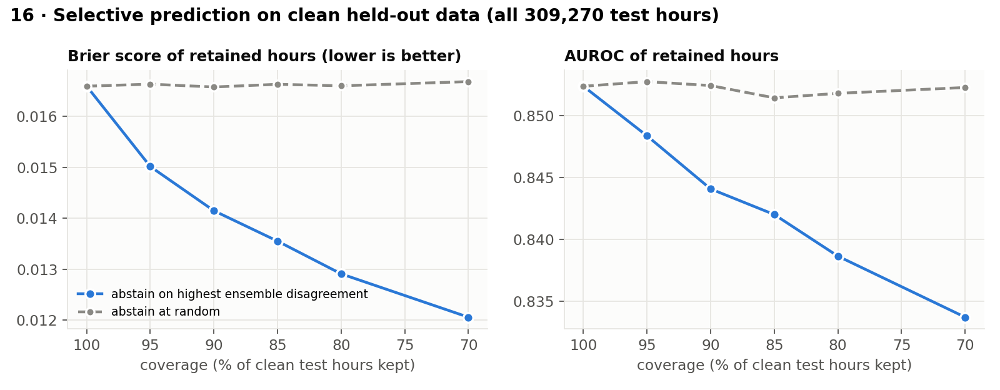
Data faults: which abstention signal catches failures? On the 499,092 patient-hours of the four accidental-fault runs (6,790 dangerous failures), we ranked hours by four signals and abstained on the top 5–40%.
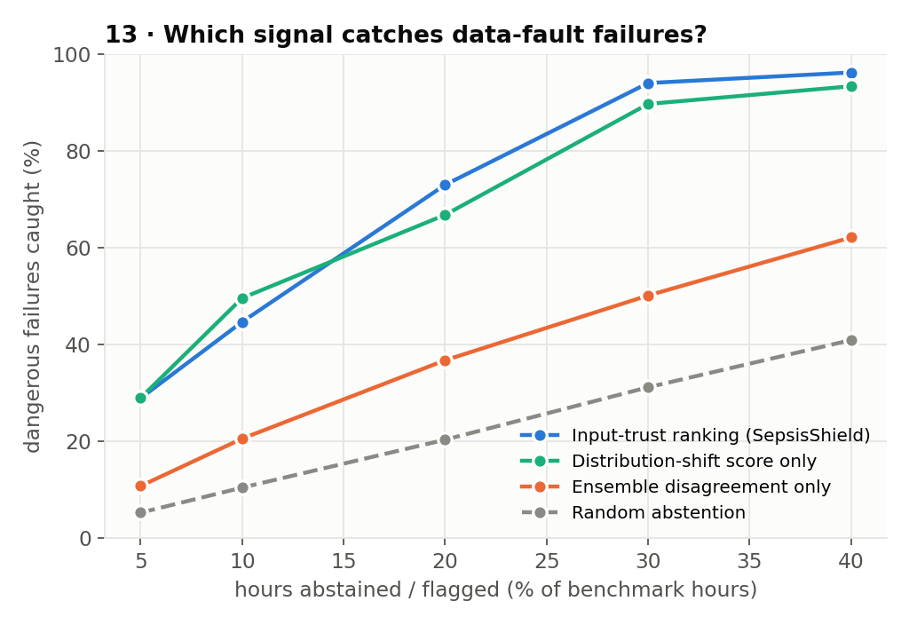
| Hours abstained | Input-trust ranking | Shift score only | Ensemble disagreement only | Random |
|---|---|---|---|---|
| 5% | 29.0% | 29.0% | 10.8% | 5.3% |
| 10% | 44.7% | 49.6% | 20.6% | 10.5% |
| 20% | 73.0% | 66.8% | 36.8% | 20.4% |
| 30% | 94.0% | 89.7% | 50.1% | 31.2% |
| 40% | 96.2% | 93.4% | 62.1% | 40.9% |
Ensemble disagreement catches between a third and two-thirds as many failures as the input-trust ranking: the five models agree with each other on corrupted inputs. The shift score is competitive at low abstention rates, largely because the °F fault drives temperature far outside its training range. At its natural operating point the trust policy flags or withholds 31.2% of benchmark hours and catches 95.4% of failures.
Every decision on the dashboard is explained in one panel, "Why was this decision made?", which combines four pieces of existing evidence: (1) the top three TreeSHAP risk drivers for that hour, with direction and value; (2) the integrity check that set the trust level, in plain language (for example "Physiologically implausible temperature — check units or sensor"); (3) the shift state and the features outside their training range; and (4) the decision rule that was applied. Global importance (Figure 8) is led by care-process and timing features (hours since FiO₂ was measured, hours in the ICU, time from hospital to ICU admission), followed by SIRS criteria, ICU type, renal labs (BUN, creatinine) and temperature. The prominence of process features is a caution: part of the signal reflects how clinicians monitor sick patients, which can change between hospitals.
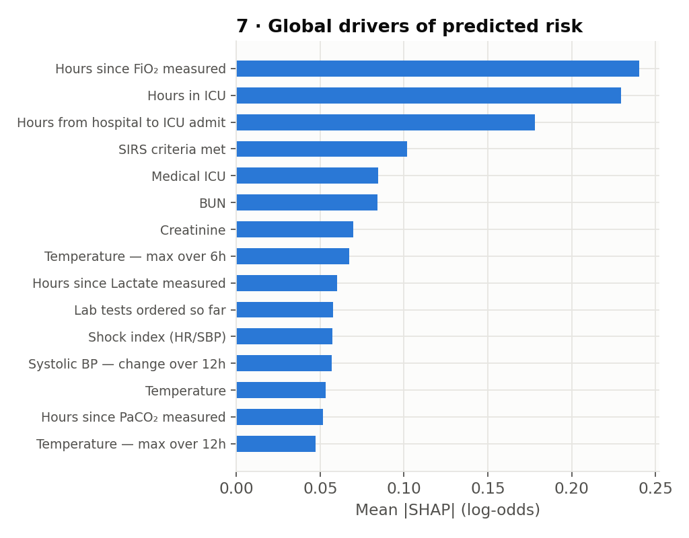
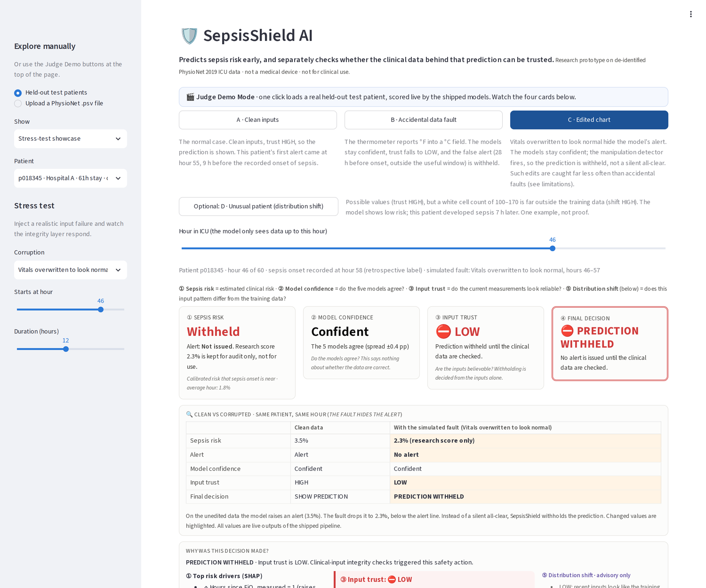
SHAP is not the novelty here. What the panel adds is a trust explanation: a clinician can see that a prediction was withheld because a temperature of 98.6 is impossible in °C, not because the model was unsure.
We added components one at a time and measured, on the accidental-fault benchmark, how many dangerous failures each configuration catches and what it costs on clean data (all hours of the 8,068 test patients).
| Configuration | AUROC | ECE | Dangerous failures caught | Clean hours flagged or withheld (total) / withheld only |
|---|---|---|---|---|
| Base: single LightGBM, raw probability | 0.852 | 0.0031 | 0 / 6,790 (0.0%) | 0.0% / 0.00% |
| + 5-seed ensemble | 0.853 | 0.0032 | 0 / 6,790 (0.0%) | 0.0% / 0.00% |
| + isotonic calibration | 0.852 | 0.0028 | 0 / 6,790 (0.0%) | 0.0% / 0.00% |
| + ensemble-disagreement warning only | 0.852 | 0.0028 | 272 / 6,790 (4.0%) | 0.9% / 0.00% |
| + input-integrity checks (full trust layer: warn or withhold) | 0.852 | 0.0028 | 6,481 / 6,790 (95.4%) | 5.1% / 0.46% |
| (counterfactual) also flag on shift MODERATE/HIGH | 0.852 | 0.0028 | 6,547 / 6,790 (96.4%) | 9.3% / 0.46% |
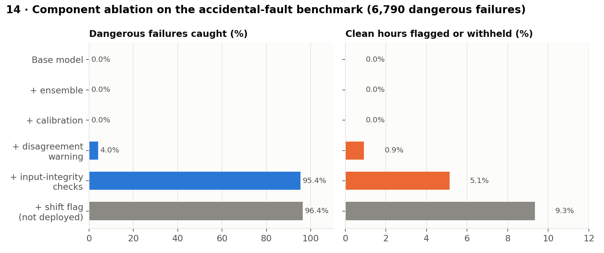
Findings. (1) A better or better-calibrated model does nothing for data faults: rows 1–3 catch 0 failures, because they never look at whether inputs are believable. (2) Ensemble disagreement catches only 4.0%. (3) The input-integrity checks raise coverage to 95.4% while flagging or withholding 5.1% of clean hours in total (withholding 0.46%). (4) Also flagging on MODERATE/HIGH shift would catch 66 more failures (96.4%) but raise clean flags to 9.3%. We judged that trade-off not worth making, so shift stays advisory.
| Feature set | Features | AUROC | AUPRC | Utility |
|---|---|---|---|---|
| Demographics + vitals (raw) | 14 | 0.812 | 0.094 | 0.388 |
| + labs | 40 | 0.836 | 0.102 | 0.399 |
| + missingness patterns | 75 | 0.848 | 0.112 | 0.426 |
| + temporal trends | 157 | 0.854 | 0.124 | 0.439 |
| + clinical composites (full) | 172 | 0.851 | 0.123 | 0.427 |
| Transfer | Internal AUROC (source) | External AUROC | External utility | Sensitivity | Specificity | Specificity after local recalibration |
|---|---|---|---|---|---|---|
| Hospital A → B | 0.837 | 0.790 | 0.295 | 62.0% | 76.5% | 79.6% |
| Hospital B → A | 0.861 | 0.775 | 0.313 | 91.0% | 28.8% | 38.4% |
Discrimination drops at an unseen hospital (AUROC 0.790 and 0.775, versus 0.837 and 0.861 internally). The B→A operating point is badly placed (specificity 28.8%); local recalibration helps calibration and specificity but cannot recover discrimination. Any deployment would need local validation.
| Subgroup | Patients | Septic | AUROC (95% CI) | Patient sensitivity (95% CI) |
|---|---|---|---|---|
| hospital: A | 4,068 | 358 | 0.830 (0.811–0.848) | 80.4% (76.5%–84.5%) |
| hospital: B | 4,000 | 228 | 0.874 (0.856–0.893) | 77.6% (72.8%–82.9%) |
| age group: 45-64 | 2,997 | 197 | 0.846 (0.820–0.869) | 74.6% (67.8%–81.0%) |
| age group: 65-79 | 2,745 | 218 | 0.861 (0.840–0.880) | 84.4% (79.4%–89.2%) |
| age group: 80+ | 1,038 | 82 | 0.833 (0.795–0.867) | 73.2% (63.4%–82.9%) |
| age group: <45 | 1,288 | 89 | 0.858 (0.831–0.884) | 83.1% (75.3%–91.6%) |
| sex: Female | 3,517 | 228 | 0.857 (0.835–0.879) | 78.5% (73.7%–83.6%) |
| sex: Male | 4,551 | 358 | 0.848 (0.831–0.865) | 79.9% (76.1%–83.8%) |
| icu: MICU | 2,406 | 195 | 0.848 (0.828–0.868) | 81.5% (75.9%–86.2%) |
| icu: SICU | 2,510 | 126 | 0.861 (0.832–0.892) | 73.0% (64.7%–79.4%) |
| icu: Unknown | 3,152 | 265 | 0.840 (0.820–0.859) | 80.8% (76.2%–85.3%) |
All cases are real held-out test patients, scored live in the public demo; each is pinned by an automated test so the demo cannot drift from what the models do.
Case 1 — false alarm from a unit error (scenario B, p119917). The thermometer reports °F into the °C field for hours 34–41. Without the fault the risk at hour 36 is 0.9% (no alert); with it, 3.9% — an alert 28 hours before onset, outside the useful window. All five models agree (confident). The plausibility check fires, trust is LOW, and the false alert is withheld with the message "Physiologically implausible temperature — check units or sensor". At hour 37 the same patient is at REDUCED trust (VERIFY INPUTS), because the sticky window keeps the patient flagged while corrupted values remain in the trend features.
Case 2 — hidden alert from an edited chart (scenario C, p018345). Vitals are overwritten to look normal for hours 46–57. On the unedited data the model alerts at hour 46 (risk 3.5%); on the edited data the risk drops to 2.3%, below the alert threshold — a confident all-clear. The coordinated-shift detector fires and the prediction is withheld rather than shown as reassuring. This case succeeds, but Table 3 shows that most edits of this kind are missed.
Case 3 — an unusual patient (scenario D, p105030). Inputs are physiologically possible (trust HIGH), but a white-cell count of 100–170 ×10⁹/L is far outside the training range (shift HIGH). The model shows low risk; the patient met the sepsis definition 7 hours later. The shift indicator gave the only warning. This is one example, not evidence that shift predicts error.
Case 4 — models disagree on clean inputs (scenario F, p010049). At hour 62 the inputs pass every integrity check, but the five models disagree more than on 99% of validation hours. Trust is REDUCED and the alert (risk 23.8%, 10 hours before onset) is shown with a verification warning. It is never withheld, because there is no input evidence against it.
Case 5 — where SepsisShield is silent. Of the 6,790 accidental-fault failures, 309 were shown silently; 271 of them came from frozen feeds whose copied-forward values are plausible and change too little for the flatline rule. Random missingness and plausible deliberate edits produce further silent failures (Tables 3 and 4). These are the cases a clinician would not be warned about.
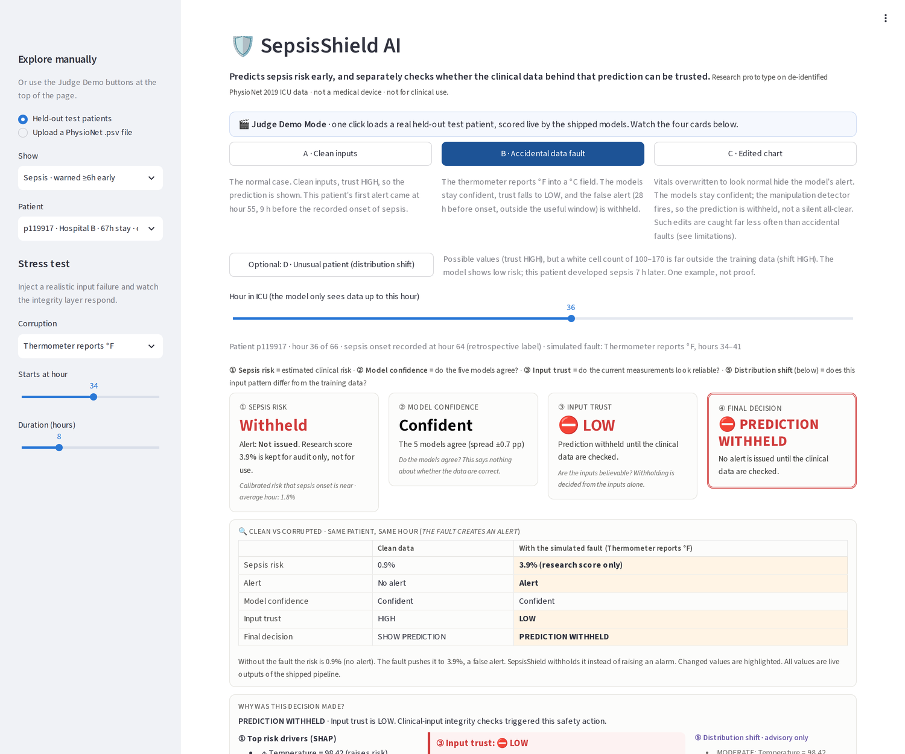
The Streamlit dashboard is public and needs no login or setup. One-click Judge Demo scenarios load real held-out patients: A (clean inputs, early warning), B (accidental °F fault, withheld), C (edited chart, withheld), and optional D (unusual patient, shift HIGH), E (early sepsis warning: risk rises from 1.1% to 13.1% and the alert is shown 8 hours before onset) and F (models disagree → VERIFY INPUTS). Every screen shows four cards — sepsis risk, model confidence, input trust, final decision — a clean-vs-corrupted comparison, the "Why was this decision made?" panel, the shift panel, the patient's risk trajectory, and an "Evidence behind this claim" expander that traces the 95.4% figure to its numerator and denominator. Users can also inject any of five faults into any demo patient at any hour, or upload a PhysioNet .psv file.
| Scenario | Standard ML model | SepsisShield (what the dashboard shows) |
|---|---|---|
| Clean patient | Predicts | Predicts; trust HIGH → SHOW PREDICTION (scenarios A, E) |
| Physiologically impossible value | Predicts confidently | Trust LOW → PREDICTION WITHHELD (1,232 / 1,232 injected hours) |
| °F temperature in a °C field | Predicts confidently (false alert) | Trust LOW → withheld; models stay confident (scenario B) |
| Vitals edited to look normal | Confident all-clear | Coordinated-shift detector → withheld (scenario C); caught far less often overall |
| Models disagree, inputs clean | Forced prediction | Trust REDUCED → VERIFY INPUTS, never withheld (scenario F) |
| Patient unlike the training data | No warning | Advisory shift indicator MODERATE / HIGH beside the decision (scenario D) |
| Random missing values | Predicts | Predicts; missingness is a model feature, not a trust flag (limitation: decision changes mostly not flagged) |
| Explanation | SHAP only | SHAP risk drivers + the integrity check that fired + shift reason + decision rule |
The main scientific finding is negative for a common assumption: improving or calibrating a risk model, or adding ensemble uncertainty, does almost nothing to protect against corrupted inputs (Table 6a). Protection comes from checking the inputs themselves, independently of the model, and from making the strongest action depend on evidence a human can verify. For accidental faults, this catches most dangerous failures at a small clean-data cost; for deliberate manipulation and missing data it does not, and we show where.
If developed further and validated prospectively, the pattern could reduce two harms of early-warning systems: false reassurance from corrupted data and alarm fatigue from impossible values. Because the vitals-only cross-signal detector failed its pre-registered test (Section 10.4), the next research steps are provenance signals from the EHR audit trail, consistency checks against signals an editor does not control, conformal bounds on abstention, and local recalibration with drift monitoring at each new site. A clinical collaborator would be essential for any of these.
Code, models and results are public. make test runs the automated test suite (75 tests; works without the raw data
because the demo patients and result files are bundled). ./run_all.sh rebuilds every number in this report from the raw
PhysioNet files in about 75 minutes on two CPU cores; tools/report/build_report.py regenerates this PDF directly from the
result files, so the text cannot drift from the experiments. All randomness is seeded; thresholds, calibrators and integrity rules are fitted
on training or validation patients only, and demo patients are held-out test patients (checked by a test).
| File | What it does / writes |
|---|---|
src/train.py | model, splits, cross-hospital, feature ablation results/results.json |
src/integrity.py | trust-layer thresholds (training patients only) models/integrity.json |
src/abstention.py | corruption benchmark, dangerous-failure coverage results/abstention*.json |
src/shift.py | distribution-shift reference and evaluation results/shift_evaluation.json |
src/experiments2.py | baselines, bootstrap CIs, recalibration results/experiments2.json |
src/exp_models.py | random forest, XGBoost, CatBoost (comparison only) results/exp_models.json |
src/exp_robustness.py | sweeps, selective prediction, ablation, cohort shift results/exp_robustness.json |
src/exp_operating_points.py | threshold / alert-burden trade-off → results/exp_operating_points.json |
src/crosssignal.py, src/exp_crosssignal.py | cross-signal detector and its pre-registered evaluation (not shipped) → results/exp_crosssignal.json |
app/app.py | public Streamlit dashboard (Judge Demo scenarios A–F) |
SepsisShield does not only ask "what is this patient's sepsis risk?" It also asks "can this prediction safely be trusted?", and it answers the second question from the clinical inputs, independently of the model. On held-out data this catches most of the dangerous failures caused by simulated accidental faults while withholding under half a percent of clean predictions. It is a research prototype with clear limits — deliberate edits, missing data and new hospitals — and those limits are reported alongside the results.